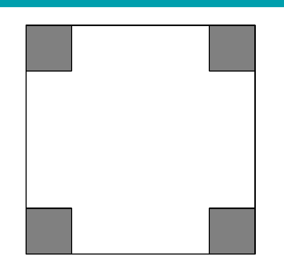

描述旋转正方形投影
最大正方形可旋转放置，使每个顶点落在原 5×5 正方形的一条边上。设一条边的水平、竖直投影长度为 x、y，则 x+y=5。
AMC 8 逐题详情与原创中文分步解答

图形来自 本地 2015 AMC 8 PDF（来源已核验；发布版未附原始 PDF）， 已记录 PDF、页码、裁切范围和图片 SHA-256；未使用外部图片热链接。
最大正方形可旋转放置，使每个顶点落在原 5×5 正方形的一条边上。设一条边的水平、竖直投影长度为 x、y，则 x+y=5。
靠近每个被切角的那条边连接两外边，其截距为 x、y。要不穿过 1×1 缺口，内角点给出的截距条件是 1/x+1/y≤1。
由 x+y=5，条件 (x+y)/(xy)≤1 等价于 xy≥5。
内接正方形边长平方就是面积 x²+y²=(x+y)²-2xy=25-2xy，所以面积不超过 25-10=15。
取 x+y=5 且 xy=5 时，每条边恰好经过一个 1×1 缺口的内角而不进入缺口，四边对称形成合法正方形，面积正好为 15。
能放入的最大正方形面积是 15，因此答案是 C，答案值为 15。
答案：(C) $15$
本题答案已按 AoPS Wiki Answer Key 核验。本站解答为独立推导与原创中文表达，不复制 AoPS 社区解答正文。
核验状态：verified · 独立用旋转正方形的水平、竖直投影和单位切角截距条件求出面积上界 15，并以边恰过四个缺口内角的构型确认可达到；与 CSV 答案 C 一致。